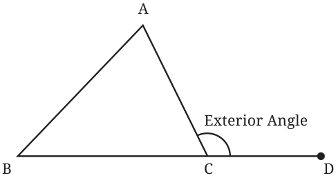

The angle formed between the extension of a side of a triangle and the other side is called an exterior angle of the triangle. In this figure, \(\angle ACD\) is an exterior angle.

Find \(\angle ACD\), if \(\angle A = 50 ^{\circ}\) , and \(\angle B = 60 ^{\circ}\) . From the angle sum property, we know that
\(50 ^{\circ} + 60 ^{\circ} + \angle ACB = 180 ^{\circ} 110 ^{\circ} + \angle ACB = 180 ^{\circ}\) So, \(\angle ACB = 70 ^{\circ}\) So, \(\angle ACD = 180 ^{\circ} - 70 ^{\circ} = 110 ^{\circ}\) ,
since, \(\angle ACB\) and \(\angle ACD\) together form a straight angle. Find the exterior angle for different measures of \(\angle A\) and \(\angle B\). Do you see any relation between the exterior angle and these two angles? [Hint: From angle sum property, we have \(\angle A + \angle B + \angle ACB = 180 ^{\circ}\) .] We also have \(\angle ACD + \angle ACB = 180 ^{\circ}\) , since they form a straight angle. What does this show?